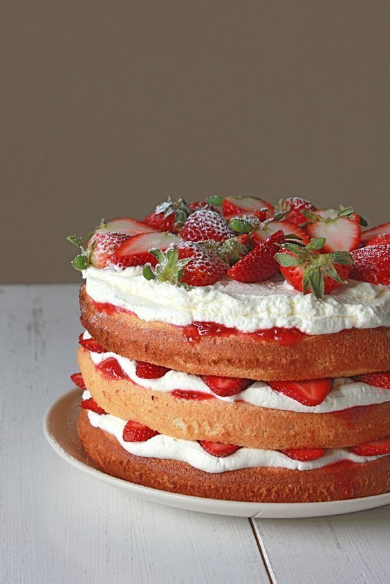

1. Vienā bļodā liek rikotu, pievieno cukuru, olas, sāli un vaniļu, sastāvdaļas apmaisa, tad pievieno nedaudz atdesētu izkausētu sviestu. 2. Citā bļodā sajauc miltus ar cepamo pulveri, tad pievieno un iemaisa jau iepriekš samaisītajās sastāvdaļās. 3. Zemenēm noņem zaļo daļu, katru sagriež divās vai trīs daļās, tad iemaisa pagatavotajā mīklā. 4. Mīklu izlīdzina ar cepamo papīru izklātā un ar sviestu ieziestā cepamformā, to liek līdz 180°C sakarsētā cepeškrāsnī un kūku gatavo 50 - 55 minūtes, tad no krāsns izņem, atdzesē apmēram 20 minūtes, izceļ no formas, pārber ar pūdercukuru un pasniedz ar svaigām ogām.